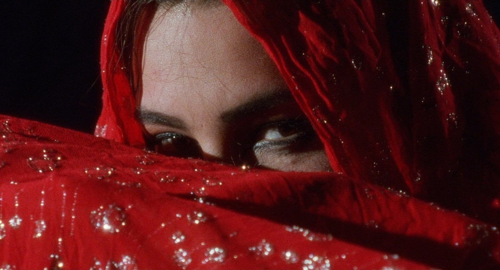

Use wide frames, ritual distance, architecture, and horizon.
Open page
Press & media
Archive the image. Protect the mystery.
Press materials should emphasize mythology, stage authority, and intimate detail without flattening the identity into generic publicity.

Eyes
Best used when the feature focuses on identity and self-construction.

Type as symbol
Language can function as visual punctuation inside editorials.

Red event
Reserve for the climax moments in press packages and cover imagery.